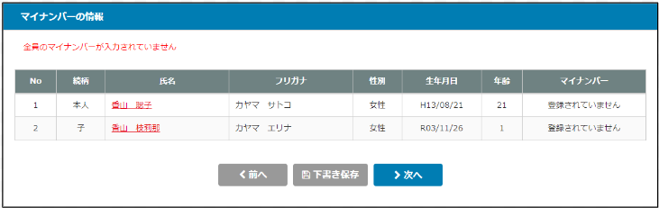

目 次
HR-Zeroを使用して入社する社員に本人情報の登録を依頼することができます。
この機能を使用することで、社員情報のやり取りや登録ミスを軽減できます。
-
１-１会社側で行うこと

あなたの情報
｜ポイント｜
① 必須項目は必ず入力すること
あなたの氏名とフリガナ、性別、生年月日、郵便番号、都道府県、住所、住所フリガナ、電話番号
② 下記はわかれば入力する
・基礎年金番号は基礎年金手帳をお持ちの場合は入力する
・雇用保険被保険者番号は雇用保険証をお持ちの場合は入力する
③ 外国籍者の場合
配偶者の情報

｜ポイント｜
① 配偶者がいない場合は、このまま次へ進みます。
｜ポイント｜
① 配偶者がいる場合は「はい」を選択して入力すること
② 必須項目は必ず入力すること
配偶者の氏名とフリガナ、性別、生年月日
③ 同居していない場合
『配偶者又は家族の所在地に関する情報』を参照
④ 不要に入っている場合
『配偶者又は家族の扶養に関する情報』を参照
⑤ 外国籍者の場合
『配偶者又は家族の外国籍に関する情報』を参照
家族の情報（配偶者以外）
｜ポイント｜
① 家族がいない場合はそのまま次へ進みます。
｜ポイント｜
① 家族がいる場合は１人ずつ登録する
登録は「家族を新規で登録する」をクリック
② 必須項目は必ず入力すること
家族の氏名とフリガナ、性別、生年月日
③ 同居していない場合
『配偶者又は家族の所在地に関する情報』を参照
④ 不要に入っている場合
『配偶者又は家族の扶養に関する情報』を参照
⑤ 外国籍者の場合
『配偶者又は家族の外国籍に関する情報』を参照
最終確認
最後に「送信する」をクリックする
｜ポイント｜
① 最後に「送信する」をクリックする
② これで会社側（HR-Zero）に通知が届くので、会社側で手続きを行います。
⚠ 依頼する時にマイナンバーを必須とした場合
｜ポイント｜
① 続柄や氏名などを確認して個人番号（マイナンバー）を入力します。
② 家族が多いと間違ってしまうことがあるのでしっかりと確認します。
② あなたの情報で外国籍を選択した場合に行うこと
｜ポイント｜
① 必須項目は必ず入力すること
・ローマ字氏名
→ 厚生年金保険ローマ字氏名届や雇用保険関係手続き（資格取得届など）で使用されます。
・国籍地域
・在留カード番号
・在留資格
・在留期間
・資格外活動許可
・派遣・請負労働者として別事業所で就労する
→ 雇用保険関係手続き（資格取得届など）で使用されます。
② ローマ字氏名は大文字英字で入力します。
④ 配偶者又は家族の扶養に関する情報
｜ポイント｜
① 下記項目は被扶養者異動届の申請に必要なので必ず入力します。
・職業
・収入 → 無職の場合は０を入力
・基礎年金番号 → 基礎年金手帳を持っていない場合は不要
② 何を入力すればいいのか不明な項目は入力しなくてもOKですが、極力入力してください。
・被扶養者になった日、被扶養者になった理由

{kind=link}
{kind=link}
{kind=link}
{kind=link}
{kind=link}
{kind=link}
{kind=link}
{kind=link}
{kind=link}
{kind=link}
{kind=link}
{kind=link}
{kind=link}
{kind=link}
{kind=link}
① 内容を確認して登録、手続き依頼を行う
基本情報

｜ポイント｜
① 社員からの情報を確認して、入力されていない項目や不備などがあれば、差戻しをしてください。
② 問題なければ、必要事項を入力する
必須項目は必ず入力すること
・社員番号（個人コード）
｜ポイント｜
社労法務システムに登録するので、前ゼロは付けない
・入社年月日、入社区分
・雇用形態
｜ポイント｜
最初は「正社員」が選択されているので、パートなどの場合は正しく選択する
・給与区分
｜ポイント｜
・月給者は「月給（遅早・欠勤控除なし）」を選択
・日給月給者は「月給（遅早・欠勤控除あり）」を選択
社会保険に関する情報
{kind=link}
｜ポイント｜
① 社員からの情報を確認して、入力されていない項目や不備などがあれば、差戻しをしてください。
② 問題なければ、必要事項を入力する
③ 健康保険と厚生年金保険の加入は必ず選択すること
「加入しない」を選択した場合、以下は入力不要
④ 必須項目は必ず入力すること
通貨によるものの額、現物によるものの額
⑤ 注意点
・社会保険の資格取得日は入社日と同じですか？
→ 一般的には資格取得日と入社日は同日ですので「はい」を選択します。
・備考と住所未記入理由
→ 資格取得届の申請にて必要ですが、社労法務システムでは使用していないので入力は任意です。
雇用保険に関する情報
{kind=link}
｜ポイント｜
① 社員からの情報を確認して、入力されていない項目や不備などがあれば、差戻しをしてください。
② 問題なければ、必要事項を入力する
③ 雇用保険の加入は必ず選択すること
「加入しない」を選択した場合、以下は入力不要
④ 全ての項目は必ず入力すること（備考は任意）
｜ポイント｜
① 雇用保険被保険者番号は初めて加入する場合は、「0000-000000-0」を入力
② 適用事業所は事業所にて複数の事業場がある場合に選択が必要
③ 下記項目は最初の項目が選択されているので、必要に応じて変更する
取得区分、被保険者種類、被保険者となったことの原因、職種、就職経路
④ 賃金月額は千円単位で入力すること
⑤ 契約期間の定めは有期契約などで定めがある場合に選択する
配偶者に関する情報
{kind=link}
｜ポイント｜
① 社員からの情報を確認して、入力されていない項目や不備などがあれば、差戻しをしてください。
② 問題なければ、必要事項を入力する
③ 配偶者の所在地に関する情報
同居していない場合は内容を確認する
④ 配偶者の扶養に関する情報
・扶養に入っている場合は内容を確認する
・但し、被扶養者になった日と被扶養者になった理由は、本人では入力できないので担当者が入力する
一般的には
→ 被扶養者になった日は本人の社会保険の資格取得日
→ 被扶養者になった理由は配偶者の就職
家族に関する情報（配偶者以外）
{kind=link}
｜ポイント｜
① 社員からの情報を確認して、入力されていない項目や不備などがあれば、差戻しをしてください。
② 問題なければ、必要事項を入力する
③ 家族の所在地に関する情報
同居していない場合は内容を確認する
④ 家族の扶養に関する情報
・扶養に入っている場合は内容を確認する
・但し、被扶養者になった日と被扶養者になった理由は本人では入力できないので担当者が入力する
一般的には
→ 被扶養者になった日は本人の社会保険の資格取得日
→ 被扶養者になった理由はその他を選択して理由を入力する
マイナンバー情報
{kind=link}
｜ポイント｜
① 本人や配偶者、家族の氏名をクリックして、マイナンバーを確認します。
不備などがあれば、差戻しをしてください。
最終確認
{kind=link}
｜ポイント｜
① 最終確認を再度行い、手続きを依頼する
{kind=link}
{kind=link}
{kind=link}
{kind=link}
{kind=link}
{kind=link}
入社する社員のメールアドレスを予め聞いておきます。
個人情報の登録を案内するメールが届くので登録することも伝えておきます。